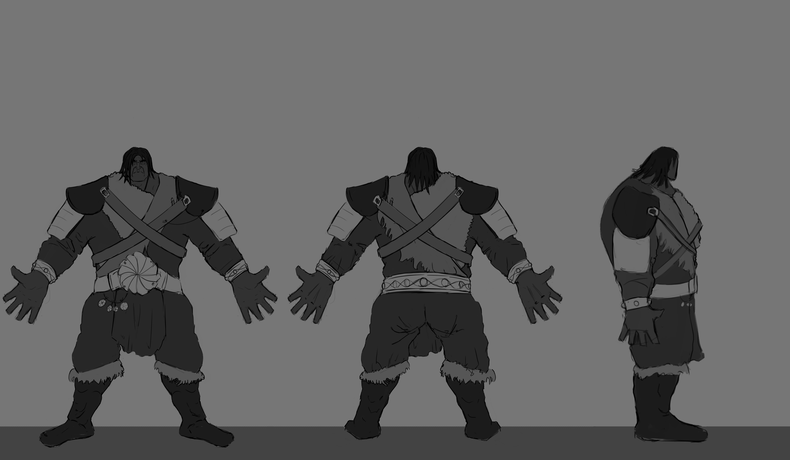

Concept Art · Characters · Environments · Creature Design
Diseño de personajes para videojuegos. Enfoque en silueta, materiales y lectura clara en gameplay.

Concept art de personaje tanque.
Exploración de armadura pesada, desgaste y contraste de materiales.